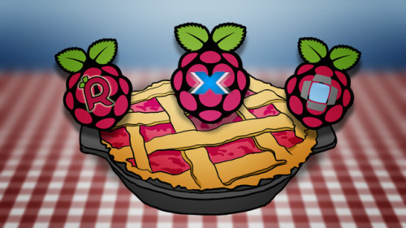
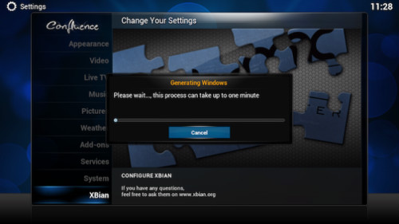

XMBC是我们最喜欢的媒体中心解决方案之一。Raspberry Pi使得打造一台豪华的XMBC机器仅需35$。有三个为Pi定制的版本，但是，你该选择哪一个呢？这些版本略有差异，各有长短。本文将介绍如何选择一个合适的版本。
在这里，用于Pi的XMBC系统，你有三大选择：Raspbmc（我们之前已经介绍过），OpenELEC以及XBian。这三者操作起来与安装了XMBC的PC差不多，并且都拥有相似的基本功能。但是他们在某些小的方面略有不同，使得他们各自在Pi上的配置方法也不同。让我们来了解了解这三者的差异以及优缺点。
Raspbmc使得一切开箱即用
在此之前，我们已经带着你用Raspbmc来设置你的Raspberry Pi，它的安装和运行过程都非常容易。只需要下载相应的安装器，10-15分钟后，它就安装到你的SD上面了。从这开始，你几乎可以与其他任何XBMC安装一样设置Raspbmc。这里的用户界面也正如XBMC用户所期待的一样。如果你之前用过XBMC，你将会很容易就完成设置。 Raspbmc运行在一个完整版本的Linux后台中，因而启动起来费点时间，并且占据了你的SD的很大一部分空间。相比于更轻量级的发行版，如OpenELEC，感觉上它的用户界面反应有点迟缓。也就是说，唯一的真正与媒体中心有关的视频播放功能，在Raspbmc上运行良好。你也不需要做任何工作，来让它能正常运行。流媒体音乐也能开箱即用，Airplay和PVR也不需要任何特殊设置。在开始时，你也能接触到加载项，并且大多数加载项开箱即能良好运行。 Raspbmc给你提供了一个高级设置菜单，你可以在那里设置你的网络、安装更新、调整超频、关闭服务如SSH等等。并且，由于是运行在一个完整版本的Linux中，对于那些想要在后台使用命令行、深度挖掘的人，这再熟悉不过了。基本上，Raspbmc有你从一开始，安装和设置媒体中心所需要的一切。
优点：安装简单、开箱即用、很大调整空间 缺点：运行慢
Raspbmc适合人群：Raspbmc作为最受欢迎的XBMC发行版有个原因：它无所不包、易于设置、自动更新（所以你总能拥有新功能）并且开箱即用。如果你是Raspberry Pi之XBMC或者一般媒体中心的新手，Raspbmc是一个很好的开始。它也毫无大问题，因为它有一个活跃的社区。
OpenELEC是个精简优化过的XBMC版本
OpenELEC与Raspbmc有着相同的目标：为你的Raspberry Pi提供一个简单的媒体中心。这两者的主要区别在于OpenELEC与底层的Linux发行版无关，完整安装后大约100MB（Raspbmc大约是它的两倍）。OpenELEC为一个目的而生：成为一个独立的轻量级XBMC盒子。既然OpenELEC更加小巧，因而启动更快，感觉比Raspbmc迅速一点。尽管OpenELEC没有像前者那么多的调节性和扩展性，然而，这两者的功能几乎相同。OpenELEC有它自己的安装和设置界面，并且你也不能在Linux终端进行任何设置。视频、音频播放用起来正如你期待XBMC的样子。相似的，扩展、皮肤以及其他一切都能开箱即用。 但是，OpenELEC致力于简单，你确实损失了一些功能。如果你想增加驱动文件的类型，你将不得不从头开始完全重建OpenELEC。它的安装过程完全不似Raspbmc那样简单，这意味着它比Raspbian更难定制。然而，你也不需要大量技术能力才能开始。由于它不是个自动的过程，你需要注意你在做什么。
优点：很快 缺点：更难安装、调节空间较小
OpenELEC适合人群：让OpenELEC运行起来要比Raspbmc多耗费一些精力。也就是说，一旦安装完成，OpenELEC能比Raspbmc快一点。如果你不需要大量疯狂的设置或者驱动，只是想要个简单的媒体中心，OpenELEC很可能是你想要的XBMC版本。但是，OpenELEC不能当做操作系统或者用于其他任何作用。一旦SD上安装上了OpenELEC，它就只能运行XBMC了。
XBian一直处于新功能的最前沿

XBian大概只有两个特征：持续更新以及新功能。像OpenELEC一样，XBian简单而小巧。这使得XBian启动迅速、安装简单、使用容易。 XBian基于Raspberry Pi的主要操作系统Raspbian而制作。正因为如此，几乎兼容Raspbian的一切，这意味着不需要大量设置既可以安装包和扩展到XBian上面。也因为相同的原因，XBian的启动过程比Raspbmc快，但比OpenELEC慢。然而，一旦你进入用户界面，XBian的响应就很迅速了。就像Raspbmc，XBian一开箱就像你想要的一样良好运行，并且能支持Airplay，无线适配以及一切你希望XBMC所能够的。就外观而言，XBian和Raspbmc几乎一致。 像Raspbmc一样，XBian的安装容易程度令人难以置信，并且配备有安装器。你不需要忙于制作传统SD镜像，这使得第一次入手Raspberry Pi项目和之前从未接触过Linux的人有一个很好的选择。与Raspbmc相比，XBian倾向于更多的增量更新，这意味着小功能一直在增加到XBian当中。Raspbmc通常也能得到相同的更新，只不过在登陆你的Raspberry Pi之前会要耗费几个月的时间。 XBian还支持包安装器，你只需轻轻一点即可下载整套软件。这意味着你可以很简单就安装Samba，Couch Potato或者Sick Beard。对于一个迷你家庭服务器，这太完美了。
优点：迅速、高度配置性、安装简单、比其他任何版本先获得新功能 缺点：最前沿可能有的漏洞
XBian适用人群：XBian的主要目标是让你处于XBMC上一切的最前沿。这意味着经常有新功能，同时也意味着漏洞。所以，你必须愿意一遍又一遍的处理问题。总而言之，XBian处于Raspbmc和OpenELEC之间。它灵活迅速，却不像OpenELEC一样呆板简单。要是一个金发女孩想要为Raspberry Pi找个XBMC,她有可能从XBian入手。 最后，这确实关系到个人爱好以及你愿意投入到媒体中心安装的时间。测试完这三者后，我的选择是OpenELEC，因为它感觉上更快速、稳定，并且比Raspbmc和XBian更加顺滑，但你的见解也许不同。总的说来，它们都是免费的，既然你有装有多种操作系统的多个SD。出于兴趣，把它们都测试一遍也无伤大雅。 上面三个选择不是Raspberry Pi上家庭影院的终结，但它们是迄今为止优化的最好的。Plex家庭影院端口、RasPlex前景都不错，尽管还在公测阶段。（你可以在这里查看XMBC和Plex的区别）。PiCast是另一个把你的Raspberry Pi变成一个开源的类似Chromecast设备的公测版。